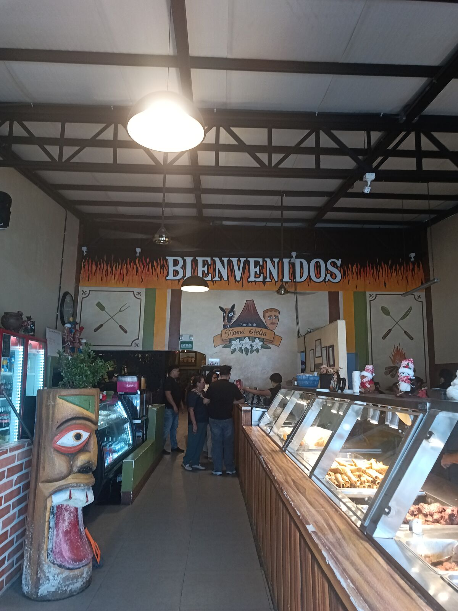
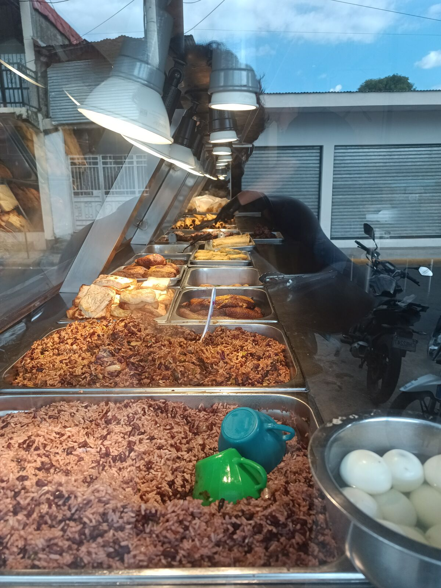
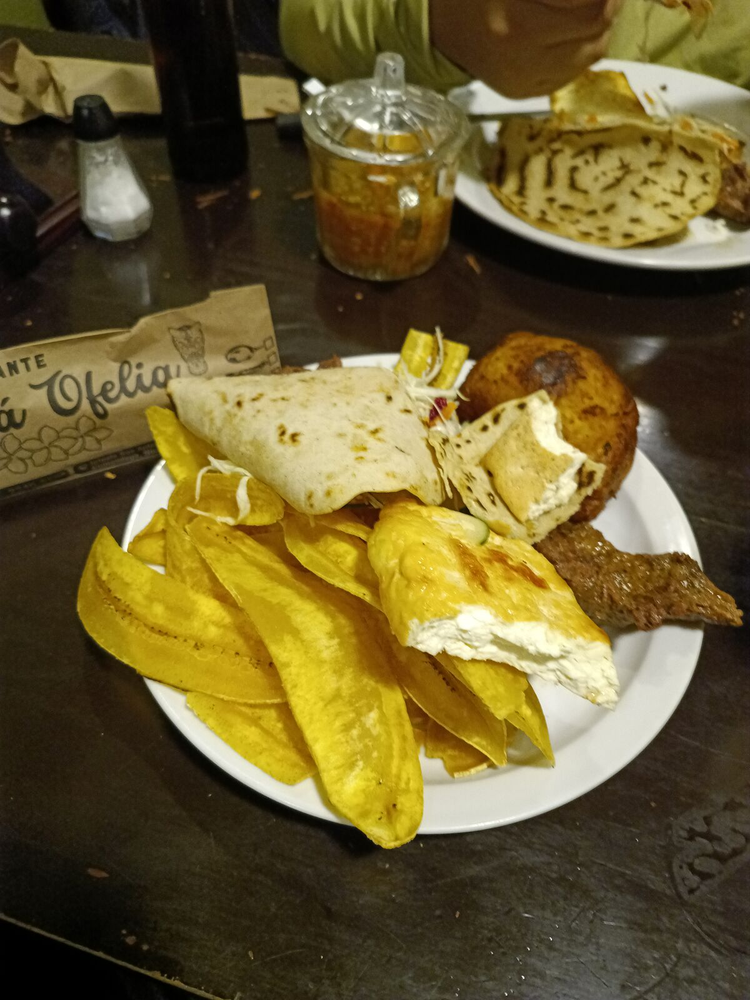
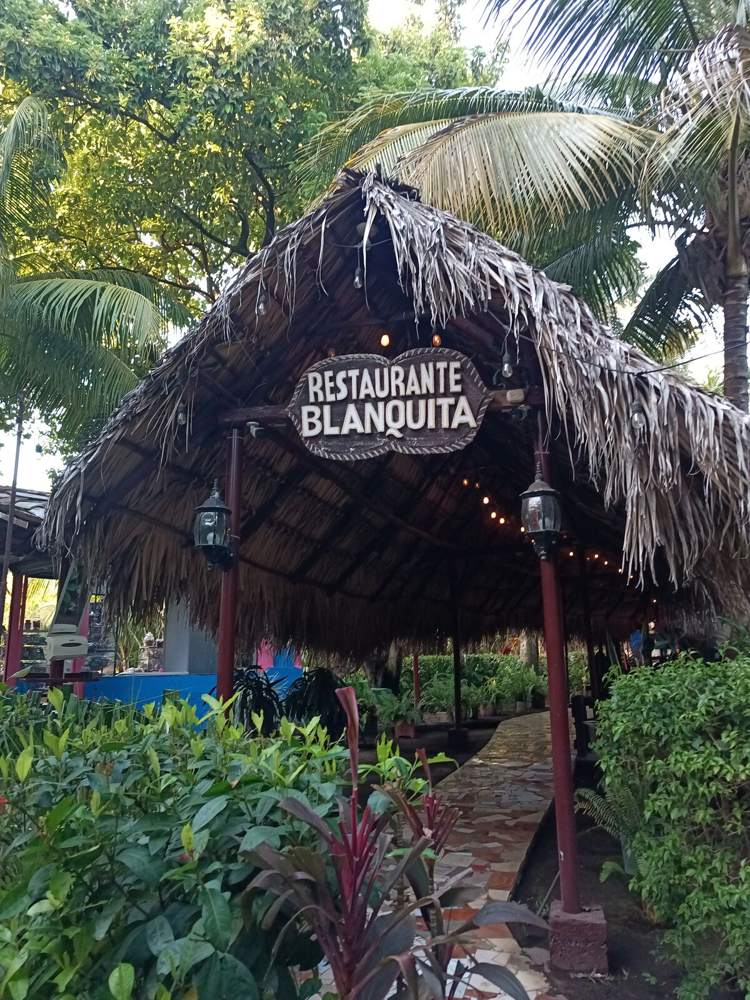
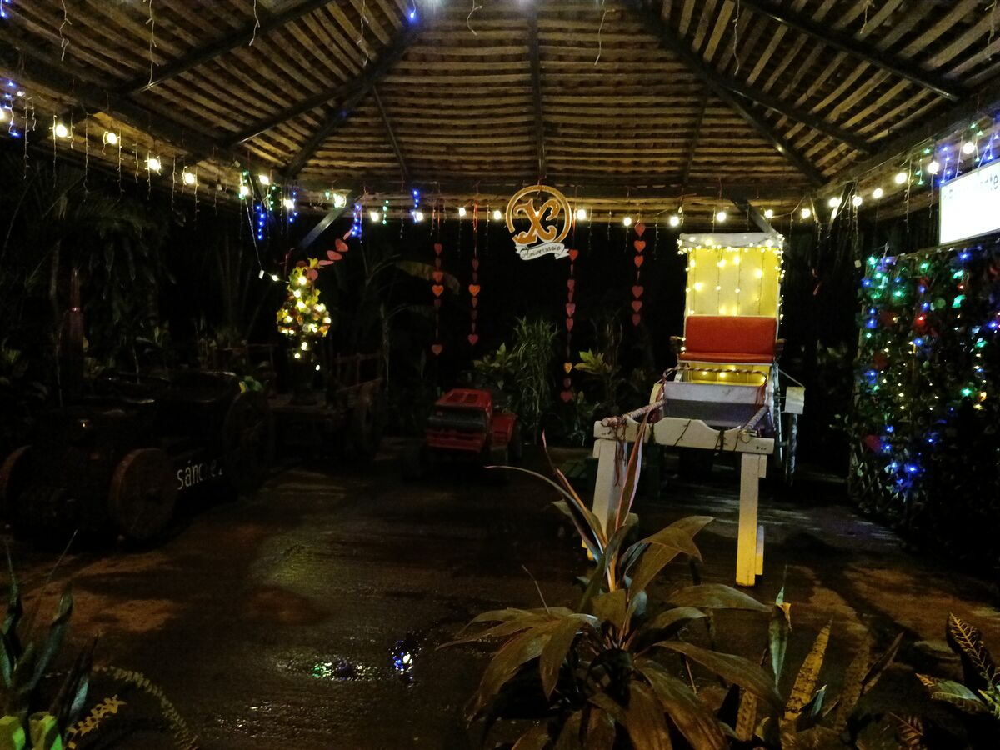

Müde, aber ausgeruht
Am Tag 7 haben wir gegessen und uns ausgeruht. Spannend, wie sich diese Ruhetage weiter ansammeln, genau wie die Müdigkeit.
Ich bin früh oder spät aufgestanden, ich weiß es nicht mehr, aber vor 9, denn dann hört das Hotel auf, das kostenlose Frühstück zu servieren. Und dann ging ich wieder ins Bett, weil ich auf magische Weise dehydriert war: Vielleicht wegen der Klimaanlage, die die ganze Nacht lief, oder weil ich zu wenig getrunken hatte, bekam ich nachts Durst.
Ich verbrachte ein paar Stunden damit, am Handy herumzuschweifen, was wohl der Grund für meine fehlende Konzentration ist. Daran werde ich in den nächsten Tagen arbeiten. Aber das Problem, liebe Leserinnen und Leser, ist, dass niemand perfekt sein kann, erst recht nicht in den stressigen Situationen, denen wir begegnen, nicht nur bei der Arbeit, sondern im Alltag. Wir tun, was wir brauchen, um uns abzulenken und dabei nicht verrückt zu werden.
José ging arbeiten, und gegen Mittag setzte ich mich zu ihm ins Café. Wir redeten und arbeiteten. Ich bestellte eine „extreme Limonade“ oder so ähnlich, „Limonade mit einem Hauch Minze“, HAHA, und einen Oreo-Kuchen. Das kostete etwa 80 Córdobas; ich gewöhne mich immer noch nicht an das Wechseln zwischen Währungen, und Bargeld hatten wir weiterhin keins. Die Limonade war mehr Minze als Zitrone, haha, nicht mein Ding. Der Oreo-Kuchen war interessant: Ich dachte, es wäre ein getränkter Kuchen oder so etwas, aber er war in Ordnung, ganz normal und ziemlich süß.
Dann gingen wir zu Mittag essen. Ich hatte nach Lokalen in Chinandega gesucht, aber José wusste schon, wohin: zu Mamá Ofelia. Chinandega ist eine Art koloniale Küstenstadt mit breiten, schachbrettartigen Straßen, ziemlich gepflegt; anscheinend waren gerade einige frisch saniert worden. Eine schöne, breite Straße verbindet sie mit dem Ort.
Wir fuhren zum Hotel, angeblich um unsere Sachen abzulegen, aber wie sich herausstellte, war es geschlossen. Ganz genau: Das Hotel, in dem wir wohnten, hatte die Türen zu, HAHAHAHA. Ich nehme an, sie waren beim Mittagessen oder Essen holen; irgendetwas war los, aber niemand war da, nicht einmal der Wachmann.
Also gingen wir mit den Rucksäcken zum Comedor, einer Art Büfett. Wir kamen etwas früh oder zum Schichtwechsel, denn es gab nicht viel, aber als wir fertig waren, war alles schön angerichtet. Wir bestellten Fleisch, Käse, „maduro con queso“, also Kochbanane mit Käsefüllung, und „tajadas“, und immer gibt es eingelegtes Gemüse dazu. Das Essen hier schmeckt zitrusartig, als würde man überall Limette draufgeben.



Wir aßen und plauderten ein wenig, aber die Hitze war heftig, also fuhren wir zum Ausruhen ins Hotel zurück. Nicht lange, denn wir wollten mit Josés Freunden und Familie ins Restaurant Blanquita.

Dort lernte ich einen 19-Jährigen kennen, der Buchhaltung studiert, aber eine technische Ausbildung in Elektronik gemacht hat, bei der man ihm nur beibrachte, Bügeleisen zu reparieren und Leitungen zu verlegen. Ich habe immer einen Roboterkopf im Auto, den von Juanito, also zeigte ich ihn ihm. Und er sagt: „Das läuft mit Arduino, oder?“ „Jep, genau.“ Und er: „Ahh, so einen hab ich noch nie gesehen.“ Und ich … wie interessant, wie interessant. Meine Gedanken schweiften ab, und wieder wurde mir bewusst, wo ich gerade stand.
Wir gingen zum Pool und aßen zu Abend/zu Mittag, haha, ich weiß nicht, was es war, aber wir aßen. Danach waren Josés Freunde, die ihn seit etwa 20 Jahren nicht gesehen hatten, so begeistert, dass wir von Ort zu Ort zogen, und die Lokale schlossen nacheinander, denn gegen 20 Uhr macht alles zu. In einem Einkaufszentrum fanden wir endlich einen Geldautomaten und konnten Geld abheben: Ich nahm 500 Córdobas, etwa 100 Quetzales. Weil das Café im Einkaufszentrum zu war, gingen wir ins Hotelcafé, und kaum waren wir da, fingen sie an abzurechnen, haha, und wir so: „Das gibt's doch nicht“, HAHAHA.

Na ja, wir aßen und redeten, und aus meiner kurzen Hose zog ich einen ESP32 Super Mini, einen der fortschrittlichsten Chips seiner Art. José und ich sagten zum Sohn des Freundes: „Wenn du herausfindest, was das ist, und es zum Laufen bringst, stehen dir bei unserer Rückkehr in Guatemala die Türen offen.“ Ich finde es wichtig zu betonen, dass es hier mehr um den Zugang zu Dingen geht, darum, wie neugierig der Junge ist, und vor allem darum, dass er nicht aufgibt, denn sein Vater glaubt fest an ihn, und solche Prüfungen werden ihm immer begegnen, solange er in der Technik ist.
Wir brachten die Familie nach Hause und plauderten noch eine halbe Stunde oder vierzig Minuten, bis wir endlich ins Hotel zurückkehrten. Im Pool merkte ich, dass meine Kniekehlen empfindlich waren; ich schwamm ziemlich viel, und das tat dann weh.
Ich sagte zu José, wie unglaublich es ist, dass man seinem Freund trotz allem, was er uns erzählt hat, den Willen ansieht weiterzumachen: weiterzuarbeiten, zu leben. Das nehme ich mit. Es ist eine große Lektion zu wissen, dass ich mehr Privilegien und Chancen habe und sie nicht vergeuden sollte. Josés Freund hat eine wunderschöne Familie, drei Kinder und seine Frau, und man sieht ihm die Leidenschaft für alles an, was er tut. So will ich sein, wenn ich groß bin.
Wir fuhren ins Hotel zurück und fielen um, und so endete dieser Tag: müde, aber ausgeruht.
👆 Tippe oder klicke auf einen Punkt der Karte, um das Kapitel dieses Tages zu lesen.